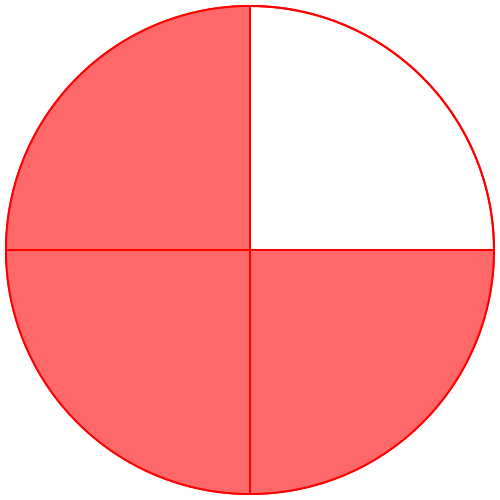
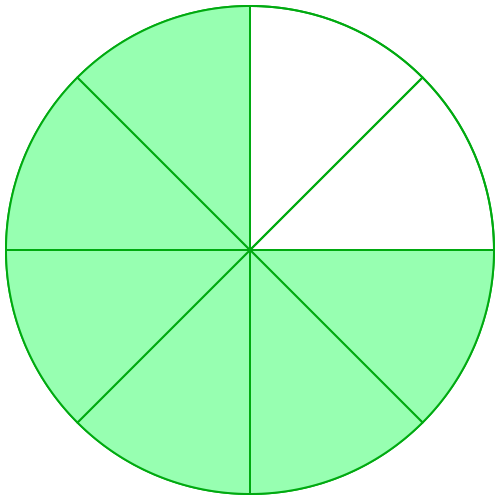
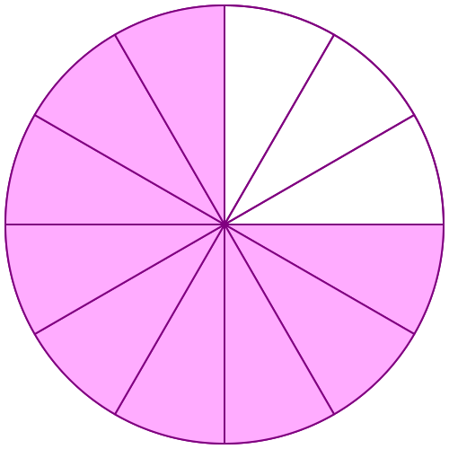
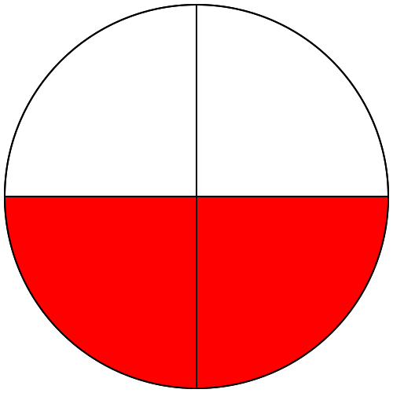
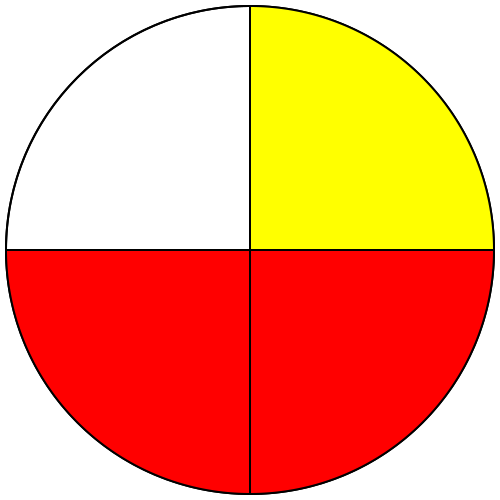

|
A6
|
- Manipuler les fractions
|
Activité Introduction
On considère les disques de fractions suivants :



-
-
Observer les surfaces colorées ci-dessus. Que peut-on en dire ?
-
À quelle fraction correspond chacune des parties colorées du disque ?
-
Recopier et compléter alors l'égalité de fraction :
$\frac{■}{4}$=$\frac{■}{8}$=$\frac{■}{12}$
-
-
Recopier et compléter : $\frac{3\times \textcolor{#039be5}{■}}{4\times \textcolor{#039be5}{■}}= \frac{6}{8}$
-
Recopier et compléter : $\frac{9\div \textcolor{#EEBB00}{■}}{12\div \textcolor{#EEBB00}{■}}= \frac{3}{4}$
-
Comment modifier une fraction pour obtenir une autre fraction qui lui soit égale ?
-
Trouver d'autre fractions égales à $\frac{3}{4}$.
Fractions égales :
Un quotient ne change pas lorsque l'on multiplie (ou divise) son numérateur et son dénominateur par un même nombre (non nul).
Soit k$\neq0$ :
$\frac{a}{b}=\frac{a\ \times\ \textcolor{#e53935}{k}}{b\ \times\ \textcolor{#e53935}{k}}$
et
$\frac{a}{b}=\frac{a\ \div\ \textcolor{#e53935}{k}}{b\ \div\ \textcolor{#e53935}{k}}$
Exemples :
$\frac{6}{7}=\frac{6\ \times\ \textcolor{#e53935}{4}}{7\ \times\ \textcolor{#e53935}{4}}=\frac{24}{28}$
$\frac{32}{24}=\frac{32\ \div\ \textcolor{#e53935}{8}}{24\ \div\ \textcolor{#e53935}{8}}=\frac{4}{3}$
Addition de fraction :
Propriété :
Pour effectuer la
somme (ou la
différence) de deux nombres en écriture fractionnaire de même dénominateur :
- On garde le dénominateur commun;
- On additionne (ou on soustrait) les numérateurs.
Exemples :
-
| $\frac{2}{4}$ |
+ |
$\frac{1}{4}$ |
= |
$\frac{2+1}{4}=\frac{3}{4}$ |
|  |
+ |
|
= |
 |
-
$\frac{7}{31}+\frac{16}{31}=\frac{7+16}{31}=\frac{23}{31}$